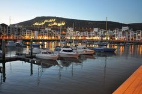
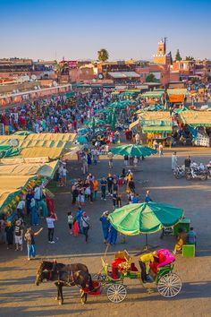
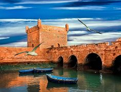
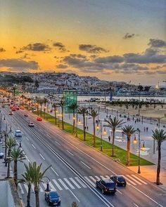

Agadir
Agadir, aussi appelée Agadir Irir est une ville du sud-ouest marocain, située sur la côte atlantique, dans la région du Souss, à 508 km au sud de Casablanca, à 173 km d'Essaouira et à 235 km à l'ouest de Marrakech5. Surnommée «la capitale du Souss6», Agadir est le chef-lieu de la région administrative Souss-Massa et de la préfecture d'Agadir Ida-Outanane. D'après le recensement de 2014, Agadir comptait cette année-là 421 844 habitants7, et la population de la préfecture d'Agadir Ida-Outanane était de 600 599 habitants7. Tanger Med est géré par l'Agence Spéciale Tanger Méditerranée, TMSA10, société anonyme à directoire et conseil de surveillance. Cette agence a été créée en 2003 afin de réaliser les engagements pris par l'État Marocain, via un mode de gouvernance novateur qui se base sur la maitrise des coûts et des impacts d'un projet d'envergure sur le territoire national La population locale de la ville est chleuhe et est majoritairement chleuhophone. La darija est utilisée comme lingua franca par les Marocains non-berbérophones y résidant. Tanger Med est géré par l'Agence Spéciale Tanger Méditerranée, TMSA10, société anonyme à directoire et conseil de surveillance. Cette agence a été créée en 2003 afin de réaliser les engagements pris par l'État Marocain, via un mode de gouvernance novateur qui se base sur la maitrise des coûts et des impacts d'un projet d'envergure sur le territoire national Ravagée par un tremblement de terre en 1960, la ville a été entièrement reconstruite selon les normes parasismiques obligatoires. C'est désormais la plus grande station balnéaire du Maroc au climat exceptionnellement doux tout au long de l'année. Depuis 2010, bien desservie par les vols low cost (« bas prix ») et l'autoroute jusqu'à Tanger, la ville attire de tous horizons et connaît une croissance annuelle de plus de 6 % par an en demande de logements.
Marrakech
Marrakech est une ville située dans le centre du Maroc au pied des montagnes de l'Atlas4. Marrakech est surnommée « la ville rouge »N 1ou la « ville ocre » en référence à la couleur rouge d'une grande partie de ses immeubles et de ses maisons5. Marrakech et son aire urbaine comptent en 2020 un peu plus d'un million d'habitantsN 2. Par sa population, la ville est la troisième agglomération du pays, à égalité avec sa rivale historique, Fès, derrière Casablanca et Rabat. Cité impériale, au même titre que Meknès, Fès et Rabat, Marrakech fut la capitale du Maroc pendant près de 350 ans, sous les dynasties Almoravide (xie – xiie siècles), Almohade (xiie – xiiie siècles), Saâdienne (xvie – xviie siècles), ainsi que sous le règne de Mohammed ben Abdallah de l'actuelle dynastie alaouite (régnant de 1757 à 1790). 'un million d'habitantsN 2. Par sa population, la ville est la troca et Rabat. Cité impériale, au même titre que Meknès, Fès et Rabat, Marrakech fut la capitale du Maroc pendant près de 350 ans, sous les dynasties Almoravide (xie – xiie siècles), Almohade (xiie – xiiie siècles), Saâdienne (xvie – xviie siècles), ainsi que sous le règne de Mohammed ben Abdallah de l'actuelle dynastie alaouite (régnant de 1757 à 1790). Marrakech abrite une vaste médina de 600 hectares, la plus peuplée d'Afrique du nord, et classée au patrimoine mondial de l'humanité par l'UNESCO Marrakech abrite une vaste médina de 600 hectares, la plus peuplée d'Afrique du nord, et classée au patrimoine mondial de l'humanité par l'UNESCO. Grâce à la vitalité de sa médina, vieille de 900 ans, ses infrastructures hôtelières de classe mondiale et son climat ensoleillé, Marrakech s'est imposée comme la capitale incontestée du tourisme au Maroc. Desservie par le deuxième aéroport du pays en termes de trafic, l'aéroport Marrakech - Ménara, la ville a accueilli en 2019 près de 3 millions de visiteurs.
Essaouira
essaouira est une ville portuaire et une commune du Maroc, chef-lieu de la province d'Essaouira, dans la région de Marrakech-Safi. Elle est située au bord de l'océan Atlantique et compte 77 966 habitants en 2014. Bien que la région d'Essaouira soit habitée dès l'Antiquité de manière discontinue par les Phéniciens, par les Gétules à l’époque de Juba II puis par les Romains, ce n'est qu'à partir du xvie siècle que le site est véritablement occupé par les Portugais, qui édifient en 1506 une forteresse, le Castelo Real, et des remparts rapidement abandonnés devant la résistance acharnée de la population locale. té de manière discontinue par les Phéniciens, par les Gétules à l’époque de Juba La fondation de la ville d'Essaouira proprement dite sera le fait du sultan Mohammed ben Abdallah, qui lance sa construction à partir de 1760 et fait une expérience originale en confiant celle-ci à plusieurs architectes de renom, notamment Théodore Cornut, qui trace le plan de la ville, et avec pour mission d'édifier une cité adaptée aux besoins des marchands étrangers. Une fois bâtie, elle ne cesse de croître et connaît un âge d'or et un développement exceptionnel, devenant le plus important port commercial du pays mais aussi sa capitale diplomatique entre la fin du xviiie siècle et la première moitié du xixe siècle. Elle devient également une ville multiculturelle et artistique. La situation de la ville se dégrade considérablement entre la fin du xixe siècle et le début du xxe siècle à la suite du bombardement qu'elle subit en 1844 puis avec l'installation du protectorat français en 1912. Elle perd de son importance et n'est plus le port international et la capitale diplomatique du pays. Après l'indépendance, le départ de la communauté juive cause également des dommages économiques très importants à la ville.
Tanger
Tanger est une ville du Nord du Maroc, deuxième poumon économique du Maroc, et capitale de la région de Tanger-Tétouan-Al Hoceïma. Elle est le chef-lieu de la préfecture de Tanger-Assilah. Située à l'extrémité du Nord-Ouest du pays sur le détroit de Gibraltar, la ville se trouve à quatorze kilomètres de la côte espagnole. Sa population s'élève à 1 365 601 habitants au recensement de 2015. Tanger Med est géré par l'Agence Spéciale Tanger Méditerranée, TMSA10, société anonyme à directoire et conseil de surveillance. Cette agence a été créée en 2003 afin de réaliser les engagements pris par l'État Marocain, via un mode de gouvernance novateur qui se base sur Tanger Med est géré par l'Agence Spéciale Tanger Méditerranée, TMSA10, société anonyme à directoire et conseil de surveillance. Cette agence a été créée en 2003 afin de réaliser les engagements pris par l' Tanger Med est géré par l'Agence Spéciale Tanger Méditerranée, TMSA10, société anonyme à directoire et conseil de surveillance. Cette agence a été créée en 2003 afin de réaliser les engagements pris par l'État Marocain, via un mode de gouvernance novateur qui se base sur la maitrise des coûts et des impacts d'un projet d'envergure sur le territoire nationalTanger Med est géré par l'Agence Spéciale Tanger Méditerranée, TMSA10, société anonyme à directoire et conseil de surveillance. Cette agence a été créée en 2003 afin de réaliser les engagements pris par l'État Marocain, via un mode de gouvernance novateur qui se base sur la maitrise des coûts et des impacts d'un projet d'envergure sur le territoire nationalÉtat Marocain, via un mode de gouvernance novateur qui se base sur la maitrise des coûts et des impacts d'un projet d'envergure sur le territoire national la maitrise des coûts et des impacts d'un projet d'envergure sur le territoire national